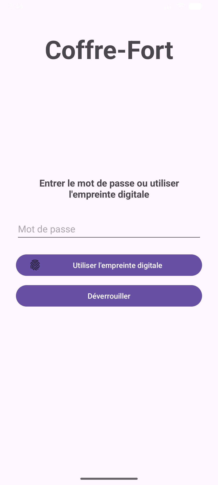
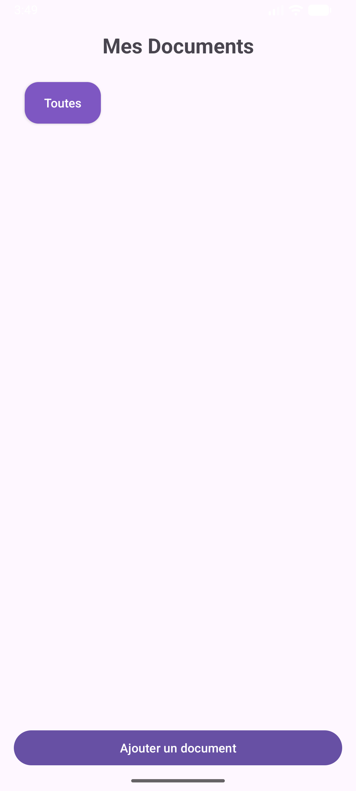
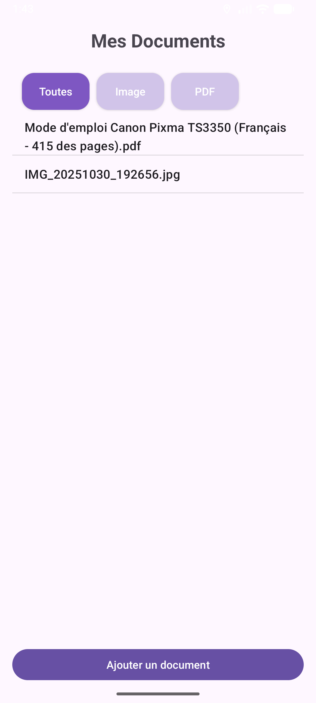
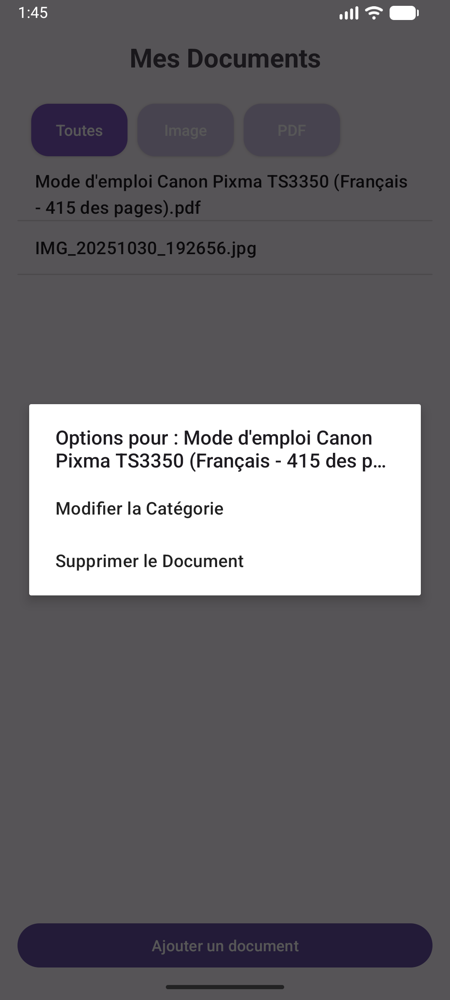
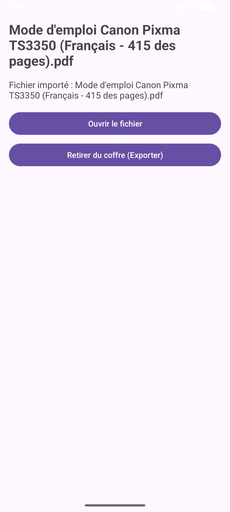

Travail Réalisé
Le développement du projet s’est basé sur plusieurs étapes essentielles permettant de mettre en œuvre les fonctionnalités attendues :
- Conception de l'interface utilisateur (UI) dans Android Studio, comprenant notamment :
- Un écran de connexion sécurisé avec authentification par mot de passe chiffré ou empreinte digitale.
- Un écran d’accueil affichant la liste des documents, avec un bandeau de catégories en haut et un bouton d’ajout de document en bas.
 
- Mise en place d’une base de données SQLite pour stocker localement et de manière sécurisée tous les documents et leurs catégories. Les données restent strictement confinées dans l’application, sans stockage externe.
Organisation de la base de données
La base de données se compose de deux tables principales : Categorie et Document. Chaque table possède des champs spécifiques répondant à un rôle précis dans le fonctionnement de l’application.
Table Categorie
Cette table sert à organiser les documents par thèmes ou groupes. Chaque catégorie permet de regrouper plusieurs documents.
id– identifiant unique permettant de distinguer chaque catégorienom– nom de la catégorie affiché à l’utilisateur
Table Document
Cette table stocke l’ensemble des documents ajoutés dans l’application. Chaque document est lié à une catégorie via une clé étrangère.
id– identifiant unique du documenttitre– titre du document affiché dans la listedescription– informations complémentaires liées au documentcheminFichier– chemin du fichier stocké sur l'appareilcategorie_id– identifiant de la catégorie à laquelle le document appartient
- Ajout de document flexible :
- Création d’une note directement dans l’application.
- Importation de fichier depuis le téléphone, avec association à une catégorie existante ou nouvelle.

- Gestion avancée des documents et catégories :
- Tri par catégorie sur l’écran d’accueil.
- Appui long sur un document ou une catégorie pour afficher des options :
- Pour une catégorie : renommer ou supprimer.
- Pour un document : changer de catégorie ou supprimer.
- Accès à une vue détaillée d’un document, avec possibilité de l’ouvrir via une application externe ou de l’exporter à nouveau sur l’appareil.
  
- Interface dynamique avec des layouts adaptés selon les types de documents et catégories afin de rendre la navigation fluide et intuitive.